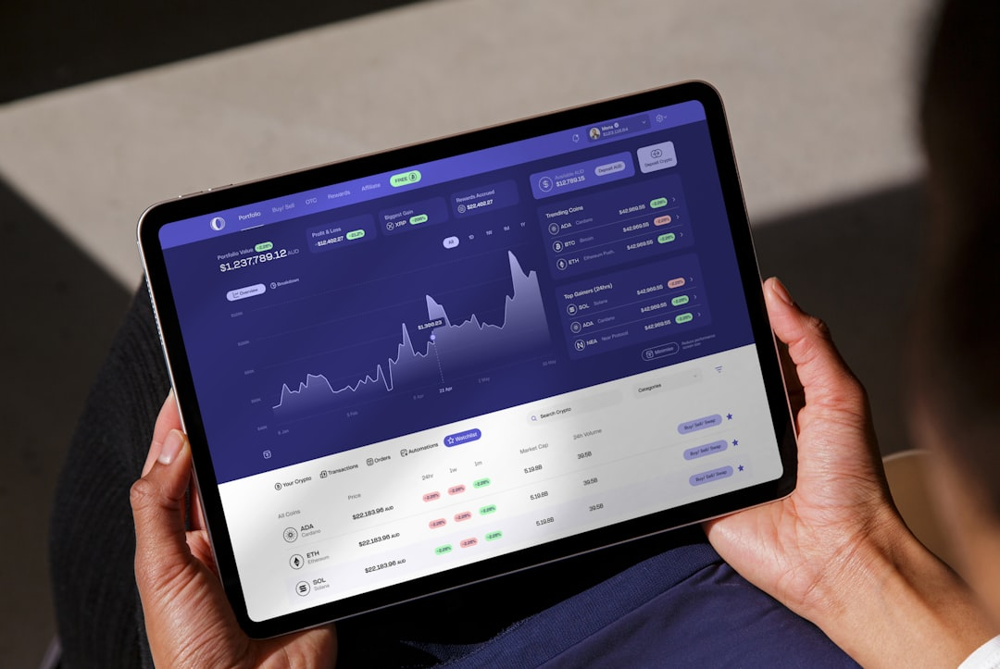

Adelaide Finance Broker states that its enquiry support is free and no obligation, with access to 50+ partner brokers and brokers who work with 40+ lenders. Listed categories include home loans, investment loans, car loans, commercial loans, business loans and equipment finance. Use the enquiry to identify a suitable licensed broker, then ask that broker how lender choice, costs, loan structure and approval conditions apply to your situation.
For borrowers comparing finance brokers adelaide options, the useful starting point is loan purpose, broker specialisation, lender access and the questions to ask before sharing personal details.
Finance Brokers Adelaide Explained
Adelaide Finance Broker describes itself as an enquiry website. It says licensed finance brokers provide all credit assistance, and it also says the site does not provide financial advice or credit assistance. That distinction gives borrowers a useful frame: the enquiry is a way to reach a broker, not a loan recommendation in itself.
The listed service categories are home loans, investment loans, car loans, commercial loans, business loans and equipment finance. A borrower comparing a finance broker in Adelaide should therefore begin with the purpose of the loan, because the right conversation for a first home purchase may differ from the one needed for equipment finance or a commercial loan.
Ask which broker specialisation fits the scenario, which lenders can be considered, what documents are needed, and when the broker can explain loan costs and conditions in writing.
Who this applies to
This guide is for Adelaide and South Australian borrowers who know the broad category of finance they need but want a clearer way to compare broker fit. The site refers to home loan borrowers, property investors, car buyers, business borrowers, commercial borrowers and people seeking equipment finance.
- Home loan borrowers can ask how a mortgage broker compares interest rates, fees, repayments, features and approval conditions.
- Investors can ask how the broker discusses loan structure, repayment type, future borrowing plans and advice boundaries.
- Business and commercial borrowers can ask whether the broker regularly deals with SME finance, commercial property or business assets.
- Vehicle and equipment borrowers can ask what asset information and borrower documents should be ready before an application is considered.
The sibling guide on home loan broker Adelaide comparisons is a narrower starting point if the only question is residential mortgage help.
Questions before choosing a broker
ASIC Moneysmart's home loan guidance refers to interest rates, costs and repayments, and includes tools for estimating repayments and affordability. In a broker conversation, that means the borrower should look beyond a headline rate and ask how the recommendation accounts for total loan cost, repayment pressure and loan features.
Useful questions include:
- Which lenders are being compared for this type of finance?
- Are any lenders excluded from the broker's panel?
- How is the broker paid, and does that influence which loans are presented?
- What documents are needed before the broker can give meaningful guidance?
- What fees, charges or break costs should be checked before refinancing?
Adelaide Finance Broker says brokers are paid by lenders and that the enquiry support costs borrowers nothing. The individual broker should still explain commissions, fees, comparison assumptions and lender limits in plain English.
Using local context carefully
The business names Adelaide CBD, Adelaide Hills, Aldinga, Brighton, Burnside, Campbelltown, Glenelg, Mount Barker and other service areas. Those place names are most useful when they guide better questions, not when they are treated as proof of suitability.
A borrower can ask whether the broker has dealt with similar South Australian property, vehicle, business or equipment scenarios. A buyer looking at a residential loan may need a different document discussion from a business owner seeking asset finance. A borrower considering commercial finance may need to prepare business records before lender options can be compared.
For investment property, use the broker conversation to separate loan approval from the wider decision. Ask what assumptions the broker is using, what the lender needs to verify, and when to seek separate tax, legal or financial advice.
Comparing broker and lender paths
A direct bank conversation can be straightforward when the borrower already wants that lender and product. A broker conversation may be more useful when the borrower wants several lender options or has a scenario that needs careful packaging, such as self-employed income, business finance, equipment finance or an investment loan.
Adelaide Finance Broker says partner brokers work with major banks including CBA, ANZ, Westpac, NAB and BankSA, plus specialist lenders. That lender access should lead to a transparent explanation, not just a list of logos. Ask why particular lenders were considered, why others were ruled out, and what trade-offs sit behind the option presented.
Before lodging an application, gather income details, current debts, living expenses, asset information, intended loan purpose and any relevant business or property documents. A prepared borrower gives the broker a better chance to identify missing information early.
- Define the loan purpose. Separate home, investment, vehicle, business, commercial and equipment needs before asking for broker help.
- Prepare the facts. Collect income, debts, expenses, asset details and current loan information so the broker can assess the scenario accurately.
- Ask about lender scope. Confirm which lenders are considered, which are excluded and why a recommended option fits the borrower profile.
- Check costs and conditions. Review rates, fees, repayment terms, commissions, break costs and approval conditions before lodging an application.
| Borrower situation | Broker question to ask | Why it matters |
|---|---|---|
| Home loan | Which lenders fit my income, deposit and repayment goals? | A mortgage discussion should compare costs, features and approval conditions. |
| Investment loan | How will repayment type and future plans be discussed? | Investment finance should be assessed beyond basic loan approval. |
| Business or equipment finance | What business records and asset details are needed before applying? | Commercial and equipment loans can depend on documents beyond personal income. |
Common questions
Is the enquiry support described as free? Yes. Adelaide Finance Broker says its broker enquiry support is free and no obligation, and that brokers are paid by lenders.
Does the site itself provide credit assistance? No. Adelaide Finance Broker says it is an enquiry website and that licensed finance brokers provide all credit assistance.
What loan types are listed? The listed categories are home loans, investment loans, car loans, commercial loans, business loans and equipment finance.
Should I choose a broker only because they are local? No. Local context can help frame questions, but broker fit should also depend on the loan type, lender access, documents required and how clearly costs and conditions are explained.
This guide covers broker selection questions for Adelaide and South Australian borrowers using Adelaide Finance Broker's stated enquiry information.